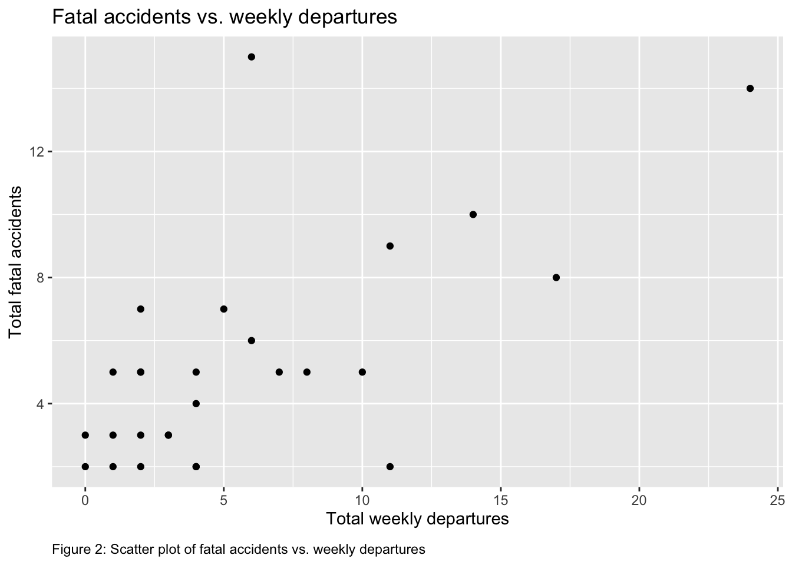

Ascertaining improvement in airline business to guarantee passenger safety and satisfaction
Data
Visualizations
Author
Ronald Bentil
Published
March 25, 2023
OVERVIEW
This is a post that will be my Midterm assignment, testing my knowledge and skills acquired in/on Data visualization thus far.
PREAMBLE
Travel is one thing people all over the world share in common usually for family, business or pleasure; be it local or international. Among the many modes of travel, the fastest and most convenient especially for longer distances is the airplane. However, in spite of the many contingencies put in place, the plane remains a machine which is prone to faults and unforeseen circumstances regardless of the efforts put in place.
In this assignment, I will analyze data on the number of fatal accidents associated with each airline for about 30 years (1985-1999 and 2000-2014 periods) and attempt to make certain inferences from that.
Criteria for choice of parameters used in assessment:
The data set had several airlines so airlines with one fatal incident per year or more in the period 1985-1999 and 2000-2014 were selected for analysis.
DATA
The data set I will be using for my visualizations is an already existent data set package in R. Source: Aviation Safety Network.
A data dictionary has been added to provide definitions for the various headers in the data set. Below is the data dictionary that defines attributes in the data:
Code
library(tidyverse)
── Attaching core tidyverse packages ──────────────────────── tidyverse 2.0.0 ──
✔ dplyr 1.1.1 ✔ readr 2.1.4
✔ forcats 1.0.0 ✔ stringr 1.5.0
✔ ggplot2 3.4.2 ✔ tibble 3.2.1
✔ lubridate 1.9.2 ✔ tidyr 1.3.0
✔ purrr 1.0.1
── Conflicts ────────────────────────────────────────── tidyverse_conflicts() ──
✖ dplyr::filter() masks stats::filter()
✖ dplyr::group_rows() masks kableExtra::group_rows()
✖ dplyr::lag() masks stats::lag()
ℹ Use the conflicted package (<http://conflicted.r-lib.org/>) to force all conflicts to become errors
Code
library(readxl)library(dplyr)library(kableExtra)airlinesafety_attributes <-read_xlsx("airlinesafetydatadictionary.xlsx")knitr::kable(airlinesafety_attributes, caption ="Table 2: Airline Safety Data Dictionary") %>%kable_styling()
Table 2: Airline Safety Data Dictionary
Header
Definition
airline
Airline
avail_seat_km_per_week
Available seat kilometers flown every week
incidents_85_99
Total number of incidents, 1985–1999
fatal_accidents_85_99
Total number of fatal accidents, 1985–1999
fatalities_85_99
Total number of fatalities, 1985–1999
incidents_00_14
Total number of incidents, 2000–2014
fatal_accidents_00_14
Total number of fatal accidents, 2000–2014
fatalities_00_14
Total number of fatalities, 2000–2014
VISUALIZATIONS
Further, I went on to generate averages and standard deviations of the number of fatal accidents for the same periods (1985-1999 and 2000-2014)
Code
library(knitr)SumFatal_accidents =apply(airlinesafety[c("fatal_accidents_00_14", "fatal_accidents_85_99")], MARGIN =2, FUN =function(x) {c(Average =mean(x), SD =sd(x), quantile(x, probs =c(.25, .5, .75, 1)), 100*mean(x >1))})rownames(SumFatal_accidents) =c("Average", "Standard deviation", "Q1 (<25%)", "Median", "Q3 (<75%)", "Max","Percentage of airlines with more than one fatal accident")kable(SumFatal_accidents, align ="c", caption ="Table 3: Summary of fatal accidents") %>%kable_styling()
Table 3: Summary of fatal accidents
fatal_accidents_00_14
fatal_accidents_85_99
Average
0.6607143
2.178571
Standard deviation
0.8586837
2.861069
Q1 (<25%)
0.0000000
0.000000
Median
0.0000000
1.000000
Q3 (<75%)
1.0000000
3.000000
Max
3.0000000
14.000000
Percentage of airlines with more than one fatal accident
21.4285714
41.071429
In addition to the above analysis, I thought it would be important to make a visualization that would better make us appreciate the information in the tabular data
Code
library(ggplot2)library(dplyr)library(reshape2)
Attaching package: 'reshape2'
The following object is masked from 'package:tidyr':
smiths
Code
airlinesafety <-read.csv("Airline safety datset.csv")airlines_fatal <- airlinesafety %>%filter(fatal_accidents_85_99 + fatal_accidents_00_14 >1)fatal_data <-data.frame(Airline = airlines_fatal$airline,Fatal_85_99 = airlines_fatal$fatal_accidents_85_99,Fatal_00_14 = airlines_fatal$fatal_accidents_00_14)fatal_data_melt <-melt(fatal_data, id.vars ="Airline")ggplot(fatal_data_melt, aes(x = Airline, y = value, fill = variable)) +geom_bar(stat ="identity", position ="stack") +labs(title ="Airlines with more than one Fatal Accidents",x ="Airline",y ="Number of Fatal Accidents",caption ="Figure 1: Distribution of fatal accidents by airline", caption.position ="left") +scale_fill_manual(name ="Time Period",values =c("grey", "black"),labels =c("1985-1999", "2000-2014")) +theme(axis.text.x =element_text(angle =70, hjust =1))
Code
plot.caption =element_text(hjust =0)
Code
library(ggplot2)departures <- airlinesafety %>%group_by(airline) %>%summarise(total_departures =sum(avail_seat_km_per_week))fatal_data <- airlinesafety %>%filter(fatal_accidents_85_99 + fatal_accidents_00_14 >1) %>%mutate(total_fatalities = fatal_accidents_85_99 + fatal_accidents_00_14) %>%select(airline, total_fatalities) %>%inner_join(departures, by ="airline")print(ggplot(fatal_data, aes(x = total_departures, y = total_fatalities)) +geom_point() +labs(title ="Fatal Accidents vs. Departures",x ="Total Departures",y ="Total Fatal Accidents",caption ="Figure 2: Scatter plot of Fatal Accidents vs. Departures"))

Having done these, I sought to plot the number of fatal accidents (for airlines that have had more than one fatal accident) against the number of departures for each airline to see if there is a relationship between the two.
The idea here here is: If there is a significant positive correlation between the two variables, this may suggest that airlines with more departures also have a higher risk of fatal accidents. Although there may be a connection, this does not necessarily mean that there is a cause-and-effect link. Other factors may also be at play.
From this analysis and table above using the Pearson correlation test and its associated p-value, there is a strong positive correlation which is statistically significant. This is an indication that this occurence (fatal accidents versus departures) is unlikely due to chance.
CONCLUSIONS
Finally, given the number of departures, it may be possible to identify airlines with a ‘higher-than-average’ rate of fatal accidents by using the analyses and visualizations presented above.
The descriptive however data don’t precisely tell which airline is the safest for travel. However, it is evident from the visualizations that the number of deadly accidents has significantly decreased and has continued to do so. An excellent sign that aviation services and technology have significantly improved over the years, and that airlines are making every effort to assuage passenger concerns and transport passengers safely.
For travelers who are worried about flight safety, this information may be helpful. It’s crucial to bear in mind that fatal accidents are still extremely uncommon occurrences, making it challenging to make firm judgments based only on this type of data.
But ultimately, it would come down to personal preference.
Source Code
---title: "BCB 520- Midterm Portfolio Post"subtitle: "Assessment of airline safety thus far"author: "Ronald Bentil"date: "2023-03-25"categories: [Data, Visualizations]image: "coa-aviation-safety-image.jpeg"code-fold: truecode-tools: truedescription: "Ascertaining improvement in airline business to guarantee passenger safety and satisfaction"---## OVERVIEWThis is a post that will be my Midterm assignment, testing my knowledge and skills acquired in/on Data visualization thus far. ## PREAMBLETravel is one thing people all over the world share in common usually for family, business or pleasure; be it local or international. Among the many modes of travel, the fastest and most convenient especially for longer distances is the airplane. However, in spite of the many contingencies put in place, the plane remains a machine which is prone to faults and unforeseen circumstances regardless of the efforts.In this assignment, I will analyze data on the number of fatal accidents associated with each airline for about 30 years (1985-1999 and 2000-2014 periods) and attempt to make certain inferences from that.Criteria for choice of parameters used in assessment:The data set had several airlines so airlines with more than one fatal accident within the period were selected for analysis. ## DATAThe data set (Table 1) I will be using for my analyses and visualizations is already existent in R studio as package. Source:[Aviation Safety Network](https://r-data.pmagunia.com/dataset/airline-safety).```{r}airlinesafety=read.csv('Airline safety datset.csv', header =TRUE)library(knitr)library(kableExtra)kable(airlinesafety, caption ="Table 1: Airline Safety Data") %>%kable_styling()```A data dictionary has been added to provide definitions for the various headers in the data set. Table 2 below is the data dictionary that defines attributes in the data:```{r}library(tidyverse)library(readxl)library(dplyr)library(kableExtra)airlinesafety_attributes <-read_xlsx("airlinesafetydatadictionary.xlsx")knitr::kable(airlinesafety_attributes, caption ="Table 2: Airline Safety Data Dictionary") %>%kable_styling()```## VISUALIZATIONSFurther, I went on to generate averages and standard deviations of the number of fatal accidents for the same periods (1985-1999 and 2000-2014)```{r}library(knitr)SumFatal_accidents =apply(airlinesafety[c("fatal_accidents_00_14", "fatal_accidents_85_99")], MARGIN =2, FUN =function(x) {c(Average =mean(x), SD =sd(x), quantile(x, probs =c(.25, .5, .75, 1)), 100*mean(x >1))})rownames(SumFatal_accidents) =c("Average", "Standard deviation", "Q1 (<25%)", "Median", "Q3 (<75%)", "Max","Percentage of airlines with more than one fatal accident")kable(SumFatal_accidents, align ="c", caption ="Table 3: Summary of fatal accidents") %>%kable_styling()```In addition to the above analysis, I thought it would be important to make a visualization that would better make us appreciate the information in the tabular data. ```{r}library(ggplot2)library(dplyr)library(reshape2)airlinesafety <-read.csv("Airline safety datset.csv")airlines_fatal <- airlinesafety %>%filter(fatal_accidents_85_99 + fatal_accidents_00_14 >1)fatal_data <-data.frame(Airline = airlines_fatal$airline,Fatal_85_99 = airlines_fatal$fatal_accidents_85_99,Fatal_00_14 = airlines_fatal$fatal_accidents_00_14)fatal_data_melt <-melt(fatal_data, id.vars ="Airline")ggplot(fatal_data_melt, aes(x = Airline, y = value, fill = variable)) +geom_bar(stat ="identity", position ="stack") +labs(title ="Airlines with more than one Fatal Accidents",x ="Airline",y ="Number of Fatal Accidents",caption ="Figure 1: Distribution of fatal accidents by airline", caption.position ="left") +scale_fill_manual(name ="Time Period",values =c("grey", "black"),labels =c("1985-1999", "2000-2014")) +theme(axis.text.x =element_text(angle =70, hjust =1)) plot.caption =element_text(hjust =0)``````{r}library(ggplot2)departures <- airlinesafety %>%group_by(airline) %>%summarise(total_departures =sum(avail_seat_km_per_week))fatal_data <- airlinesafety %>%filter(fatal_accidents_85_99 + fatal_accidents_00_14 >1) %>%mutate(total_fatalities = fatal_accidents_85_99 + fatal_accidents_00_14) %>%select(airline, total_fatalities) %>%inner_join(departures, by ="airline")print(ggplot(fatal_data, aes(x = total_departures, y = total_fatalities)) +geom_point() +labs(title ="Fatal Accidents vs. Departures",x ="Total Departures",y ="Total Fatal Accidents",caption ="Figure 2: Scatter plot of Fatal Accidents vs. Departures"))```Having done these, I sought to plot the number of fatal accidents (for airlines that have had more than one fatal accident) against the number of departures for each airline to see if there is a relationship between the two. The idea here here is: If there is a significant positive correlation between the two variables, this may suggest that airlines with more departures also have a higher risk of fatal accidents. Although there may be a connection, this does not necessarily mean that there is a cause-and-effect link. Other factors may also be at play.```{r}correlation <-cor.test(fatal_data$total_departures, fatal_data$total_fatalities)cat("Correlation Coefficient:", correlation$estimate, "\n")cat("p-value:", correlation$p.value, "\n")library(dplyr)correlation <-cor.test(fatal_data$total_departures, fatal_data$total_fatalities)results_df <-data.frame("Variable 1"="Total Departures","Variable 2"="Total Fatalities","Correlation Coefficient"= correlation$estimate,"p-value"= correlation$p.value)results_df %>%kable() %>%kable_styling() %>%add_header_above(c("Table 4: Correlation Results"=5))```From this analysis and Table 4 above making use of the Pearson correlation test and its associated p-value, there is a strong positive correlation which is statistically significant. This is an indication that this occurrence (fatal accidents versus departures) is unlikely due to chance.## CONCLUSIONSFinally, given the number of departures, it may be possible to identify airlines with a 'higher-than-average' rate of fatal accidents by using the analyses and visualizations presented above.The descriptive however data don't precisely tell which airline is the safest for travel. However, it is evident from the visualizations that the number of deadly accidents has significantly decreased and has continued to do so. An excellent sign that aviation services and technology have significantly improved over the years, and that airlines are making every effort to assuage passenger concerns and transport passengers safely. For travelers who are worried about flight safety, this information may be helpful. It's crucial to bear in mind that fatal accidents are still extremely uncommon occurrences, making it challenging to make firm judgments based only on this type of data.But ultimately, it would come down to personal preference.